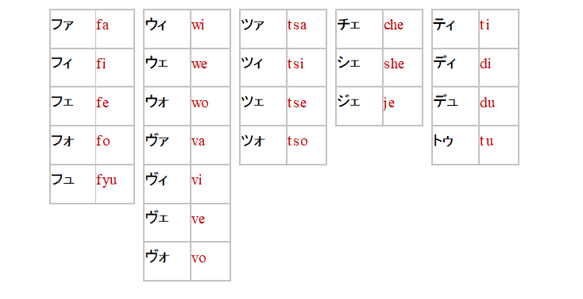
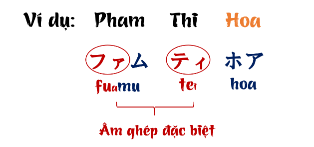

Cách chuyển tên sang tiếng Nhật
Chắc hẳn ai học tiếng Nhật đều muốn biết tên tiếng Nhật của mình là gì? tên của mình chuyển sang tiếng Nhật sẽ thành như thế nào? Đặc biệt đối với các bạn làm hồ sơ đi du học, làm hồ sơ xin việc để ứng tuyển vào 1 doanh nghiệp Nhật, hay làm hồ sơ đi lao động tại Nhật, bạn chắc chắn sẽ phải biết cách chuyển tên của mình sang tiếng Nhật một cách chuẩn xác nhất có thể.
Tên người Nhật thì thường được viết bằng chữ Kanji và phiên âm sang Hiragana. Còn chúng ta là người nước ngoài thì sẽ phải dùng chữ Katakana để phiên âm. Phiên âm có nghĩa là chúng ta sẽ tìm một từ có sẵn trong tiếng Nhật có cách đọc giống với cách phát âm trong tiếng Việt nhất để đọc ra tên chúng ta. Ví dụ từ Nguyên sẽ được chuyển thành từ có cách phát âm gần giống nhất là グエン(Guen- do tiếng Nhật vốn không có chữ Ng), hay như Phương sẽ được chuyển thành フオン(Fuon). Do hệ thống âm của tiếng Nhật với tiếng Việt khác nhau nhiều, hệ thống âm tiếng Nhật không đủ để phiên hết cách từ tiếng Việt nên sẽ có nhiều tên khi phiên âm sang bị trùng nhau như Tân, Tấn, Thắng, Thăng đều được phiên âm thành タン(tan)….v..v..
Lưu ý là vì bảng chữ tiếng Nhật và Việt không giống nhau về quy tắc ghép chữ nên sẽ phát sinh phần âm ghép đặc biệt để sao cho phát âm giống với từ mượn nhất. Tức là sẽ có những trường hợp phải dùng âm ghép đặc biệt – bất quy tắc mà chỉ bảng Katakana mới có để tạo ra chữ tương đương trong tiếng Việt hay tiếng anh …v.v..

Ví dụ như chữ Tú: trong tiếng Nhật vốn không có chữ Tu mà chỉ có Tsu, do vậy phải lấy chữ To viết to + chữ u viết nhỏ トゥ để tạo ra chữ Tu.
Hay như chữ Pha : trong tiếng Nhật vốn không có chữ Pha mà chỉ có Fu hay Ha, do vậy phải lấy chữ Fu viết to + chữ a viết nhỏ ファ để tạo ra chữ Pha.

Nên hiểu rằng không có quy chuẩn nào để chuyển âm từ Việt sang Nhật, không có khái niệm đúng/ sai nào cụ thể cả, miễn sao khi đọc ra gần giống với phát âm tiếng Việt nhất là được.
Cùng tìm hiểu cách chuyển tên từ Việt sang Nhật qua bảng sau nha ^^:
|
A An / Ân アン (an) Ái アイ（ai) Anh / Ảnh / Ánh アイン (ain) Âu アーウ (a-u)
B Ba / Bá バ (ba) Bạch / Bách バック (bakku) Bành バン (ban) Bao / Bảo バオ (bao) Ban / Băng / Bằng バン (ban) Bế ベ (be) Bích ビック (bikku) Bình ビン (bin) Bông ボン (bon) Bùi ブイ (bui)
C Can / Căn / Cán cấn カン (kan) Cảnh/ Cánh/ Canh カイン (kain) Cao カオ (kao) Cẩm/ cam / cầm カム (kamu) Cát カット (katto) Công コン (kon) Cúc クック (kukku) Cương / Cường クオン (kuon) Châu チャウ (chau) Chu ヅ (du) Chung チュン（chun) Chi / Tri チー (chi-) Chiến : チェン (chixen)
H Hà/ Hạ ハ (ha) Hàn / Hân/ Hán ハン (han) Hai/ Hải ハイ (hai) Hạnh ハン (han) / ハイン (hain) Hậu ホウ (hou) Hào/ Hạo / Hảo ハオ (hao) Hiền / Hiển ヒエン (hien) Hiếu ヒエウ（hieu) Hiệp ヒエップ (hieppu) Hoa / Hoà / Hoá / Hỏa / Họa ホア (hoa) Học ホック (hokku) Hoài ホアイ (hoai) Hoan / Hoàn / Hoàng ホアン / ホーアン (hoan) Hồ ホ (ho) Hồng ホン (hon) Hợp ホップ (hoppu) Hữu フュ (fu) Huệ/ Huê / Huế フエ（fue) Huy フィ (fi) Hùng / Hưng フン/ホウン (fun/ Houn) Huyên / Huyền フェン/ホウエン (fen (houen) Huỳnh フイン (fin) Hương/ Hường ホウオン (houon)
K – KH Kiêm / Kiểm キエム (kiemu) Kiệt キエット (kietto) Kiều キイエウ (kieu) Kim キム (kimu) Kỳ / Kỷ / Kỵ キ (ki) Khai / Khải カーイ / クアイ (ka-i / kuai) Khanh / Khánh カイン / ハイン (kain / hain) Khang クーアン (ku-an) Khổng コン (kon) Khôi コイ / コーイ / コイー (koi) Khương クゥン (kuxon) Khoa クォア (kuxoa) M Mạc / Mác マク (makku) Mai マイ (mai) Mạnh マイン (main) Mẫn マン (man) Minh ミン (min) My / Mỹ ミ / ミー (mi) O Oanh オアン (oan) P Phạm ファム (famu) Phan / Phạn ファン (fan) Phi / Phí フィ (fi) Phú フー (fu) Phúc フック (fukku) Phùng フン (fun) Phương フオン (fuon) Phước フォック（fokku) Phong / Phòng / Phóng フォン (fon) Q Quân / Quang / Quảng クアン (kuan) Quách クァック（kuxakkau) Quế クエ (kue) Quốc コック/ コク (kokku / koku) Quý / Quy / Quỳ クイ (kui) Quỳnh クーイン/クイン (kuin) Quyên/ Quyền クェン (kuxen) Quyết クエット (kuetto)
T Tài / Tại タイ (tai) Tân / Tấn : タン (tan) Tâm : タム (tamu) Tiếp / Tiệp : ティエップ (thieppu) Tiến / Tiên/ Tiển ティエン (thien) Tỷ/ tỉ / ti ティ (thi) Tin/ Tín ティン（thin) Tiêu/ Tiều/ Tiếu/ Tiếu ティエウ (thieu) Tống トン (ton) Toan / Toàn / Toán / Toản : トゥアン (twuan) Tú ツー/ トゥ (Toxu) Tuân / Tuấn トゥアン（twuan) Tuệ トゥエ（twue) Tuyên/ Tuyền トゥエン（twuen) Tùng トゥン （twunn) Tuyết トゥエット (twuetto) Tường/ Tưởng トゥオン (toxuon)
Tr Trà チャ/ ツア （cha/ tsua) Trang / Tráng チャン/ ツアン (chan/ tsuan) Trân / Trần チャン/ ツアン (chan/ tsuan) Trâm （チャム（chamu) Trí/ Chi/ Tri チー (chi-) Triển : チエン (chien) Triết チエット (chietto) Trọng チョン (chon) Triệu チエウ (chieu) Trinh/ Trịnh/ Trình チン (chin) Trung ツーン (tsu-n) Trúc ツック tsukku Trương / Trường チュオン (chuon) |
D – Đ Danh / Dân ヅアン (duan) Đức ドゥック (dwukku) Diễm ジエム (jiemu) Diễn / Dien ジエン (jien) Điểm / Điềm ディエム (diemu) Diệu ジエウ (jieu) Doãn ゾアン (doan) Duẩn ヅアン (duan) Dung / Dũng ズン (zun) Duy ヅウィ (duui) Dư / Dự ズ (zu) Duyên / Duyền ヅエン (Duen) Duyệt ヅエット (duetto) Dương ヅオン (duon) Đại ダイ (dai) Đàm / Đảm / Đam ダム (damu) Đan/ Đàn/ Đán / Đản ダン (dan) Đào ダオ (dao) Đậu ダオウ (daou) Đạt ダット (datto) Đang/ Đăng/ Đặng /Đằng ダン (dan) Đinh/ Đình/ Định ディン (dhin) Đoan / Đoàn ドアン (doan) Đỗ ドー (do-)
E Em エム (emu) G Gấm グアム (guamu) Giang ヅアン (duan)/ジアーン (jia-n) Gia ジャ（ja)
L Lan ラン (ran) Lập ラップ (rappu) Lành / Lãnh ライン（rain) Lai / Lai / Lài ：ライ (rai) Lâm/ Lam ラム (ramu) Lê / Lễ / Lệ レ (re) Linh/ Lĩnh リン (rin) Liễu リエウ (rieu) Liên リエン (rien) Loan ロアン (roan) Long ロン (ron) Lộc ロック (roku) Lụa / Lúa ルア (rua) Luân / Luận ルアン (ruan) Lương / Lượng ルオン (ruon) Lưu / Lựu リュ (ryu) Luyến/ Luyện ルーェン（ru-xen) Lục ルック（rukku) Ly / Lý リ (ri) N – NH Nam – ナム（namu) Nga / Ngà ガー/グア (ga/ gua) Ngân / Ngần ガン (gan) Nghi ギー（gi-) Nghĩa ギエ (gie) Nghiêm ギエム (giemu) Ngọc ゴック (gokku) Ngô ゴー (go) Nguyễn / Nguyên グエン (guen) Nguyệt グエット (guetto) Nhã ニャ (nya) Nhân / Nhẫn / Nhàn ニャン (niyan) Nhật / Nhất ニャット (niyatto) Nhi / Nhỉ ニー (ni-) Nhung ヌウン (nuun) Như / Nhu ヌー (nu-) Nông ノオン (noon) Nữ ヌ (nu) U Uông ウオン (uon) Ứng/ Ưng ウン (un) Uyên/ Uyển : ウエン (uen) S Sam / Sâm サム samu Sơn ソン (son) Song ソーン (so-n) Sinh シン (shin) X Xuân/Xoan スアン (suan) Xuyến/ Xuyên : スエン (suen) Y Y/ Ỷ/ Ý イー（i-) Yên/ Yến イェン (ixen)
V Văn/ Vận/ Vân ヴァン （van) Vĩnh/ Vinh ヴィン（vinn) Vi/ Vĩ ヴィ (vi) Việt/Viết ヴィエット(vietto) Võ ヴォ(vo) Vũ ヴー (vu-) Vui ヴーイ (vui) Vương/ Vượng/ Vường ヴオン (vuon)
TH Thái タイ (tai) Thân タン (tan) Thanh/ Thành / Thạnh タイン/ タン (tain/ tan) Thạch タック（takku) Thăng / Thắng タン (tan) Thắm/Thẩm : タム (tamu) Thao/ Thạo/ Thạo/ Thảo タオ (tao) Thoa : トーア/トア to-a / (toa) Thoan/ Thoản トアン (toan) Thoại トアイ (toai) Thị / Thi/ Thy ティ/ティー (thi/ thi-) Thinh / Thịnh ティン（thin) Thiệp ティエップ (thieppu) Thiên/ Thiện ティエン (thien) Thích ティック (thikku) Thọ/ thơ/ tho トー (to-) Thông/ Thống トーン (to-n) Thu/ Thụ トゥー (tou-) Thục トウック (toukku) Thuận/ Tuân トゥアン (toxuan) Thuy/ Thùy/ Thuý/ Thụy トゥイ (toui) Thuỷ トゥイ (toui) Thư トゥー (tou-) Thương / Thường トゥオン (toxuon)
|
Hãy liên hệ với LAM SENSEI nếu bạn đang có vấn đề cần được giải đáp
Hoặc INBOX FANPAGE Học Tiếng Nhật Cô Lam Lam Sensei sẽ hỗ trợ ngay cho bạn

Phương pháp học tiếng Nhật online cho người mới bắt đầu
Học tiếng Nhật online đang là sự lựa chọn của các bạn trẻ đam mê vào yêu thích ngôn ngữ này. Vậy làm sao để áp dụng phương pháp học này một cách hiệu quả? Sau đây cô Lam xin chia sẻ với các bạn một số những kinh nghiệm.
Xem chi tiết
Chia sẻ những kinh nghiệm học tiếng Nhật
Có nhiều bạn gặp khó khăn với việc học tiếng Nhật cũng như không biết nên sử dụng cách học nào, bài viết dưới đây sẽ chia sẻ phương pháp học tiếng Nhật hiệu quả ở cả 4 kỹ năng: Nghe, nói, đọc, viết.
Xem chi tiết
Giới thiệu bản thân bằng tiếng Nhật
Cùng cô Lam chia sẻ cách giới thiệu bản thân bằng tiếng Nhật cực kỳ hữu ích cho các bạn mới học tiếng Nhật
Xem chi tiết
Học tiếng Nhật có khó không
Học tiếng Nhật có khó không, Một câu hỏi được nhiều bạn đặt ra đó là học tiếng Nhật có khó không? Làm thế nào để có thể học tiếng Nhật một cách hiệu quả mà không bị nhàm chán. Sau đây cô Lam xin giải đáp cho các bạn
Xem chi tiết
Chia sẻ cách học và nhớ từ vựng tiếng Nhật hiệu quả
Từ vựng trong bất kỳ một ngôn ngữ nào là một yếu tố quan trọng không thể thiếu, học từ vựng tốt sẽ giúp con đường chinh phục tiếng Hàn của bạn dễ dàng hơn rất nhiều. Sau đây cô Lam xin chia sẻ cách học và nhớ từ vựng hiệu quả.
Xem chi tiết